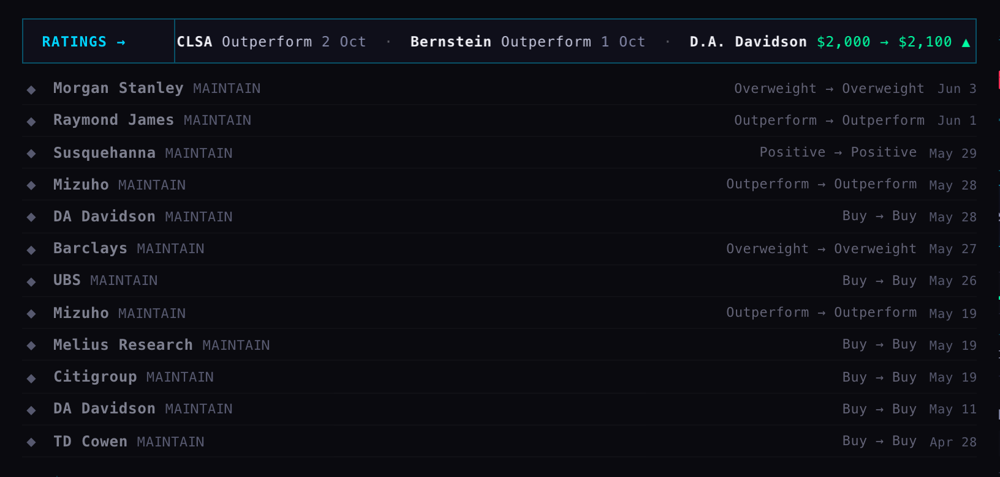
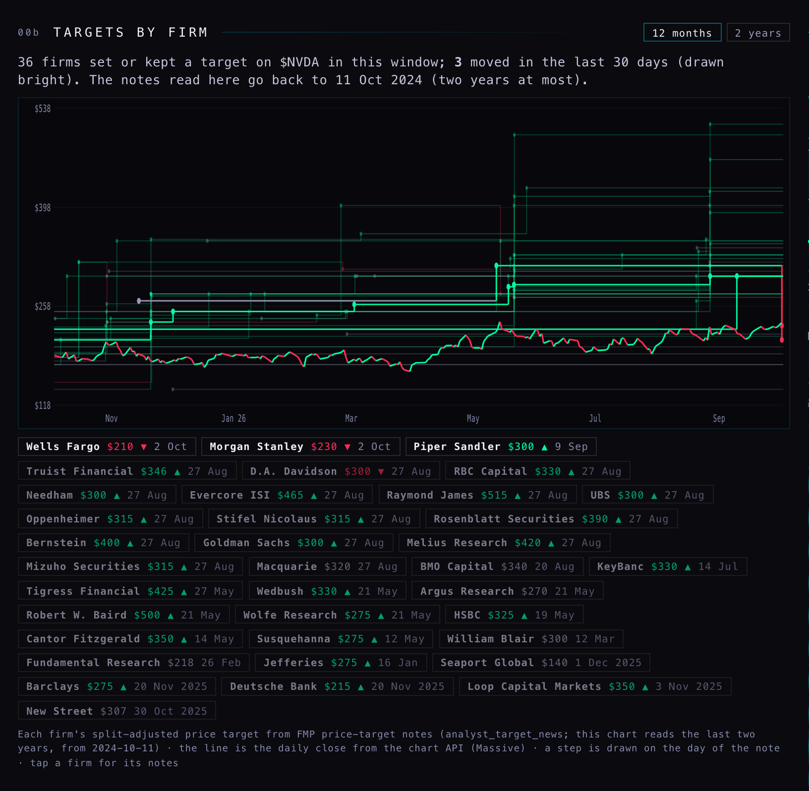
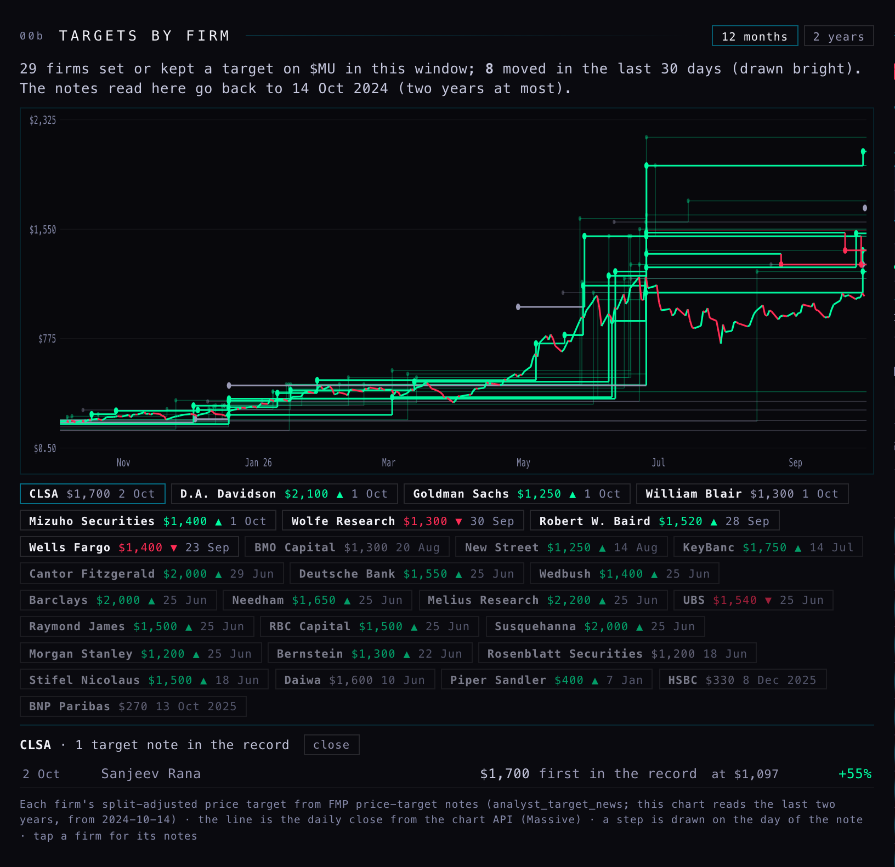
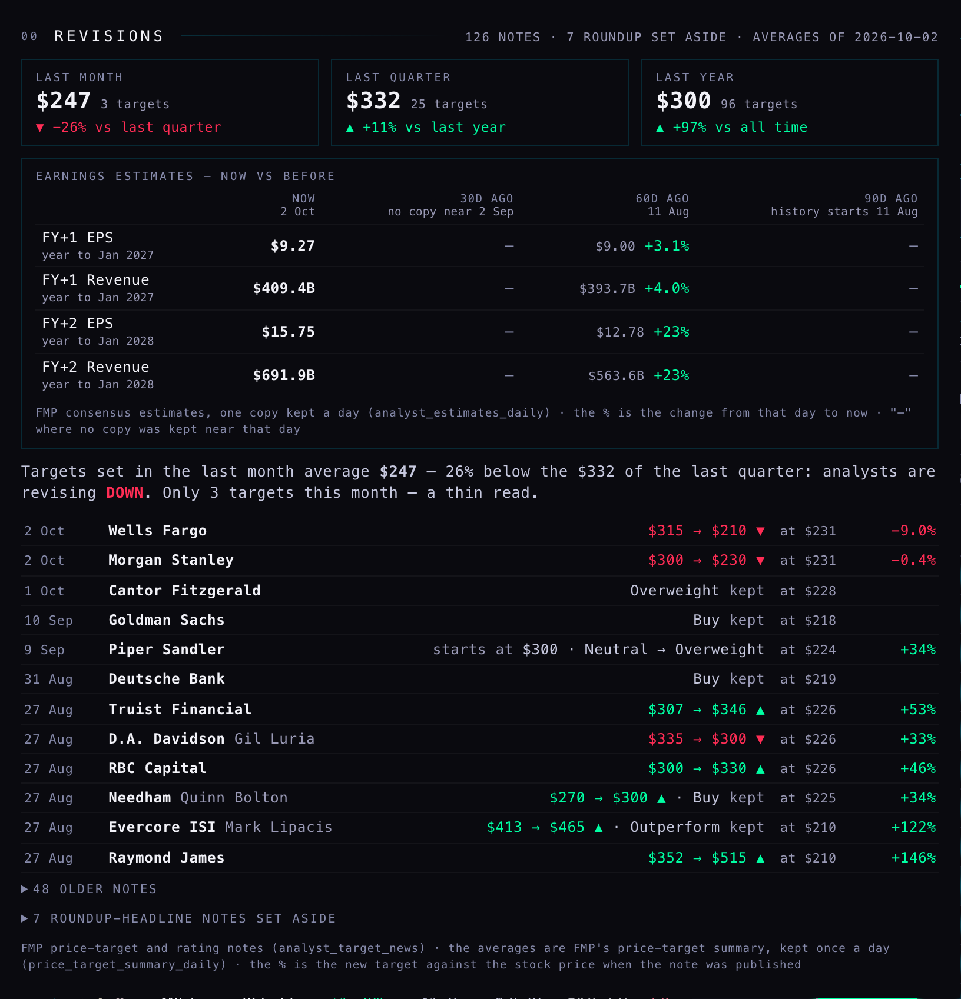
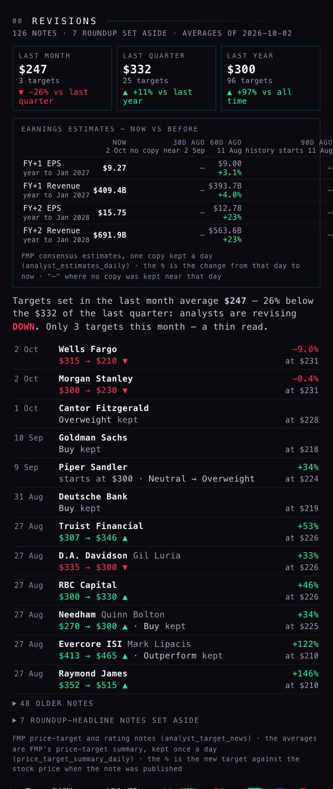
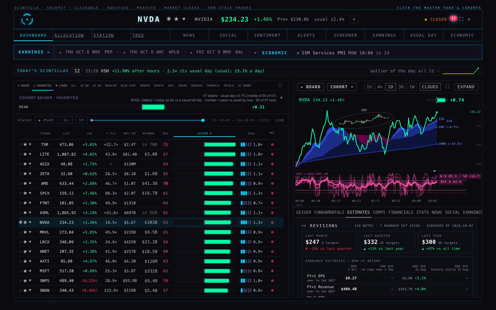

Analysts: earnings estimates going up, price targets coming down
R3 · 2 Oct 2026, night · branch hub/r3-revisions-history-20261002 · job analyst-revisions version 3 on Supabase (code label v2) · the Hub page itself is not deployed — the coordinator merges and ships
What you asked, answered first
"Are we tracking revisions in the actual earnings estimates?" Until tonight, no. The estimates table is overwritten every 4 hours and keeps no past. From tonight a copy is kept every day, and one older copy from 11 Aug was recovered from the backup store. That gives a before-and-after already:
| Targets, last month | Targets, last quarter | EPS FY+1: 11 Aug → now | EPS FY+2: 11 Aug → now |
|---|
| NVDA | $247 (3 targets) | $332 (25 targets) — month is 26% lower | year to Jan 2027: $9.00 → $9.27 +3.1% | year to Jan 2028: $12.78 → $15.75 +23% |
| MU | $1,496 (8 targets) | $1,464 (12 targets) — month is 2% higher | year to Sep 2027: $154.67 → $170.79 +10% | year to Sep 2028: $166.89 → $205.26 +23% |
For Nvidia your reading holds: since August analysts have raised next year's earnings estimate by about a quarter, while the few price targets set this month are well below the quarter's. Only 3 targets were set this month, so that half is still a thin read. Revenue estimates moved the same way as EPS (NVDA FY+2 $563.6B → $691.9B).
1 · The rating tape

Micron, 1680 wide. The tape scrolls left to right, like EARNINGS →: firm · old → new · date. Green is up, red is down, plain means kept. The old table stays underneath.
The tape uses the nightly analyst notes from the last 120 days. The table underneath still reads the older rating table, which stopped updating in early June (Nvidia's newest row there is 2 June). That is decision 1 below.
2 · Every firm's target, going back

Nvidia, last 12 months. Each firm's target is a stepped line, and each step is a note. The coloured line is the daily close (green up day, red down day). The 3 firms that moved in the last 30 days are bright: Wells Fargo cut to $210 and Morgan Stanley to $230 on 2 Oct, Piper Sandler started at $300 on 9 Sep. Use the 2-year switch for more.

Micron, with a firm tapped: its notes open underneath (date · old → new · price that day · % above the price).
How deep: FMP's per-stock pages were read back until each one passed 2 years. That covered all 454 stocks and took 1,059 FMP calls (989 for the full run plus 70 in a trial), with no errors. 881 of the 908 feeds (454 stocks × targets and ratings) reached past 2 years; the other 27 ran out because FMP has nothing older. The oldest note found is from Oct 2020. The notes table grew from 39,530 to 66,639 rows. Nvidia's targets now go back to May 2024 and Micron's to Dec 2022.
3 · Estimates beside the target arrows

Nvidia, close-up of the strip at full width (estimates beside the arrows).

The same on a phone, 390 wide.

The whole screen at 1680. In the company panel, which is narrower, the estimates sit just under the arrows.
FY+1 is the fiscal year in progress and FY+2 the one after it. Each column uses the copy kept nearest that day, within 12 days either way. Today the only older copy is 11 Aug, which fills the 60-day column. The 30-day column says no copy near 2 Sep, and the 90-day column says history starts 11 Aug. Those columns fill in as daily copies build up.
Where past estimates could and could not come from:
- The estimates table itself: no history. Each stock is deleted and rewritten every 4 hours, and only the time of the last write is kept.
- The nightly backup to R2 (cron 220–222): it rewrites the same files every night, so it holds last night only.
- One older file in the same place survived from a previous backup layout: tables/analyst_estimates/all.csv.gz, 11 Aug. It gave 5,780 rows for 317 stocks, mostly dated 11 Aug, plus 71 rows from 23–24 Jul. That August copy has no low/high EPS or revenue, so those are left blank.
- Older pages on this Mac drew estimates from IBKR in June, a different source, so they were not mixed in.
One trap was handled: FMP moved Micron's year-end date (28 Aug in August, 3 Sep now), so years are matched by the nearest end date within 45 days, not by the exact date.
What could be wrong
- "30 / 60 / 90 days ago" is mostly empty until the daily copies build up. Only 11 Aug and 2 Oct exist today.
- FMP sometimes files a weekly "top 10 calls" headline under every stock it names. Those are kept out of the tape and the chart, as R2 did.
- A firm's old target is taken from the headline ("to $X from $Y") when it gives one. Otherwise it is the firm's previous stored note.
- The daily copy only keeps the years near today: annual years from about 13 months back to 6 years ahead, and quarters from about 7 months back to 3 years ahead. That is about 8,300 rows a day.
What was built, and what was not done
- New table analyst_estimates_daily, additive only, readable by the Hub. Its rollback was written first: _archive/backend-fix-20260928/ROLLBACK-analyst_estimates_daily-20261002.sql. Now 14,086 rows for 456 stocks, dated 23 Jul to 2 Oct.
- The job analyst-revisions, versions 2 then 3 on Supabase. New mode=estimates (all stocks in about 6 seconds, 908 FMP calls). It can also read the old backup copy once, and it can page deep into older notes. The FMP key is read inside the job, never printed. The backup store is only read, never written.
- Hub page (on the branch only): the tape, 00b TARGETS BY FIRM, and the estimates box. Tests: 32 new and updated, all pass. The full Hub suite is at the same 5 known failures as before (1,765 of 1,772 pass). The trial copy was rebuilt.
- Not done: no timer added (the coordinator does that); the Hub was not deployed; the old rating table was not switched.
Timer line the coordinator can add (runs after the nightly pass, Tue–Sat):
select cron.schedule('analyst-estimates-daily', '40 1 * * 2-6', $$select net.http_post(url := 'https://wadinxqplrggagkvrdag.supabase.co/functions/v1/analyst-revisions?mode=estimates', headers := jsonb_build_object('Authorization', 'Bearer <anon key, as cron 281>', 'Content-Type', 'application/json'), body := '{}'::jsonb, timeout_milliseconds := 150000)$$);
Decisions for you
1. Switch the rating-changes table to the nightly notes? The table under the tape stopped in early June, while the tape and the strip above it are current. Recommendation: yes. It is a small change, and the two would then agree.
2. Keep a full copy of the estimates every day, or only when something changes? A full copy is about 8,300 rows a day, or about 3 million a year. Recommendation: full daily copies for now. They are simple and safe; review in three months.
3. Re-run the 2-year note backfill on a schedule? Recommendation: no. It was done once tonight, and the nightly pass keeps it current from here.